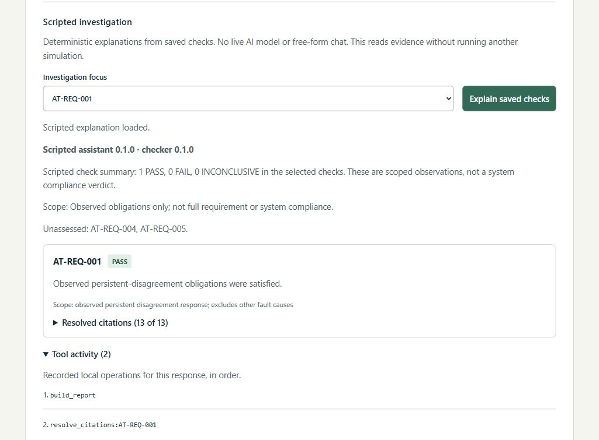

Simulation & test investigation
AeroTest Copilot
Local app + recorded demoRun deterministic C++ fault scenarios, check observed requirements in Python, and inspect scripted explanations linked to saved evidence.
- Four repeatable sensor and battery scenarios
- Scoped PASS / FAIL / INCONCLUSIVE checks
- Original records behind each explanation
Scripted investigation. No live model or free-form chat.
Educational civilian simulation; not flight software or a validated physical model.
Developed with OpenAI Codex assistance.